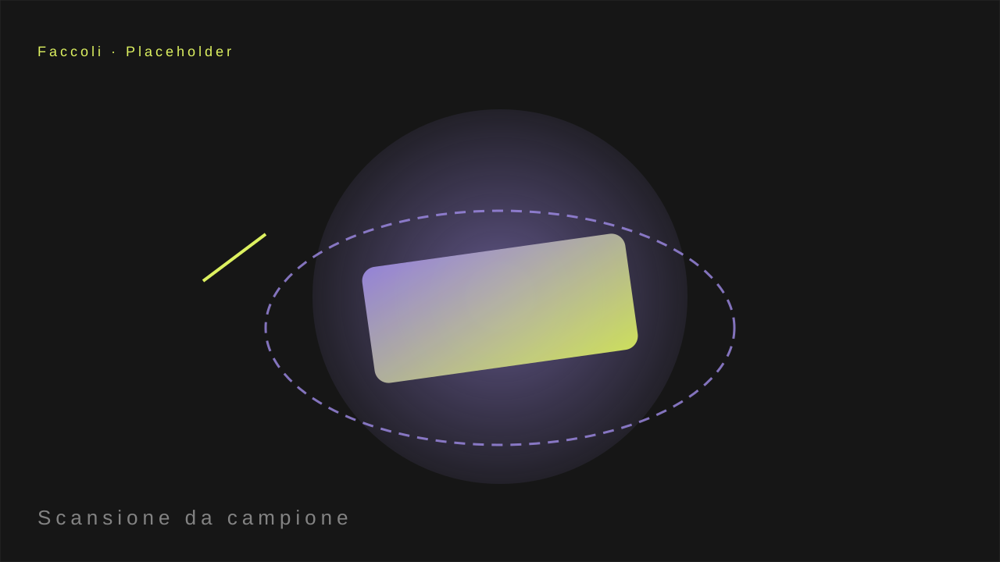

▶ Video tecnico — il tavolo in 3D
Bausola è un artigiano di tavoli per serramentisti. Il prodotto esiste solo fisicamente: nessun CAD, nessun file. Partiamo da un campione reale e da poche misure.

Dal fisico al digitale, senza file
Dal campione al modello
Fotografie e misurazioni del campione reale diventano una mesh 3D fedele: il tavolo esiste ora come modello digitale, pronto per essere mostrato, configurato e venduto online.
Un 3D che si può esplorare
Il modello 3D è navigabile nel browser: l'acquirente lo ruota, lo avvicina, vede ogni dettaglio come se lo avesse tra le mani.

Il risultato
- Landing dedicata con video tecnico e modello 3D.
- Il prodotto fisico ha ora una presenza digitale completa.
- Zero file di partenza: bastano un campione e la voglia di partire.

3D + video, una landing che vende
Non serve avere nulla di digitale: se il prodotto esiste, si può portare online.
Hai un prodotto che esiste solo in fisico?
Partiamo dal campione, come per Bausola. Parliamone.
Scopri come →